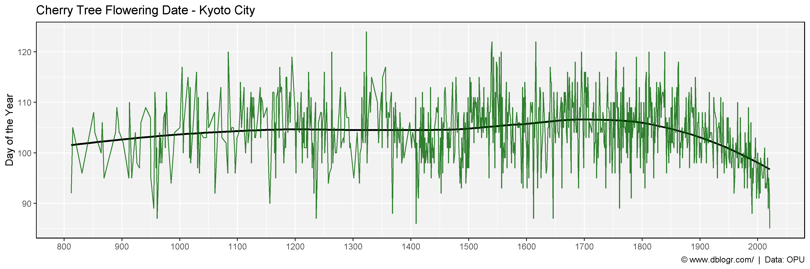
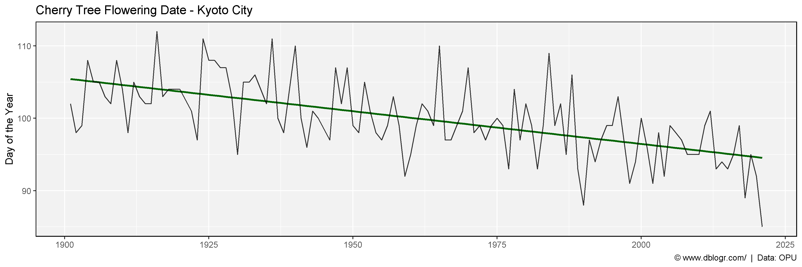

# devtools::install_github("derekmichaelwright/agData")
library(agData) # Loads: tidyverse, ggpubr, ggbeeswarm, ggrepel# Prep data
dd <- read.csv("KyotoFullFlower7.csv") %>%
filter(!is.na(Full.flowering.date..DOY.))
# Plot
mp <- ggplot(dd, aes(x = AD, y = Full.flowering.date..DOY.)) +
geom_smooth(method = "loess", se = F, color = "black") +
geom_line(alpha = 0.8, color = "darkgreen") +
scale_x_continuous(breaks = seq(800, 2000, 100)) +
theme_agData() +
labs(title = "Cherry Tree Flowering Date - Kyoto City", y = "Day of the Year", x = NULL,
caption = "\xa9 www.dblogr.com/ | Data: OPU")
ggsave("cherry_trees_01.png", mp, width = 12, height = 4)
# Prep data
xx <- dd %>% filter(AD > 1900)
# Plot
mp <- ggplot(xx, aes(x = AD, y = Full.flowering.date..DOY.)) +
geom_smooth(method = "lm", se = F, color = "darkgreen") +
geom_line(alpha = 0.8) +
theme_agData() +
labs(title = "Cherry Tree Flowering Date - Kyoto City", y = "Day of the Year", x = NULL,
caption = "\xa9 www.dblogr.com/ | Data: OPU")
ggsave("cherry_trees_02.png", mp, width = 12, height = 4)
© Derek Michael Wright www.dblogr.com/